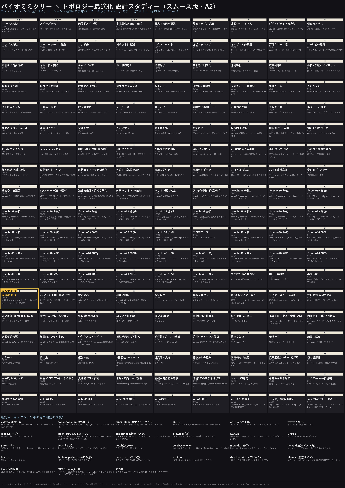
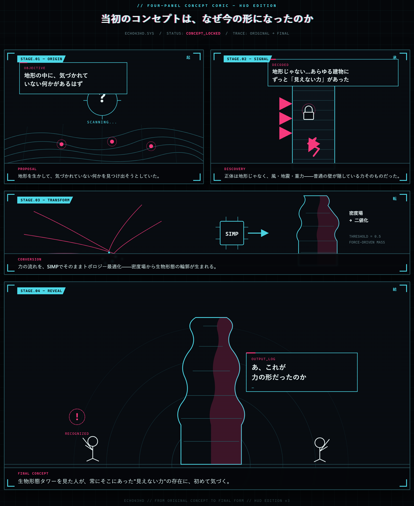

2026-06-15〜07-05、各3棟の鳥瞰パース。ピンチ / ドラッグ / ダブルタップで拡大できます。

当初の提案から現在のコンセプトへどう繋がったかを4コマ漫画で解説。

対象期間: 2026-06-15 〜 2026-07-03（現在進行形、最新は run_echo40.py）
敷地: 3ブロック（west_block / southeast_block / north_block）に塔状建築を配置する設計。
エンジン: numpy+scipy 自己完結の3Dトポロジー最適化（SIMP+OC、Hex8要素）。
このファイルは run_*.py（80本、随時増加中）の docstring・CONFIG差分を rimraf 的に読み解いて再構成した
設計の系譜。個々のツール仕様は README_run.md、環境構築は RESUME.md 参照。
topopt3d_studio.py: SIMP+OC の直方体ドメイン版。密度フィルタ・パッシブvoid・接地連結成分抽出を実装。topopt3d_cylinder.py で円筒ドメイン版を追加。--wall（外周構造壁）--minthick（最小部材厚）を導入。topopt_beso.py: ここでバイオミミクリーの核となる手法を導入。
普通のTOは剛性最大化だけだと「中実の筒」に収束してしまう（穴を開ける動機がない）ため、
局所体積制約（alpha = どの近傍も一定密度以上は埋めない）を追加して強制的に多孔質＝骨梁状にする
（Wu et al. の bone-like porous 手法）。--method bone_infill（既定）と進化的 --method beso の2系統。
連続シェルモード（--shell, dome/silo/hyperboloid）も追加、薄皮に開口を自動生成。run_site_towers.py: 各ブロックの最大内接円に円筒タワーを配置（フォームは既存のまま敷地にはめ込む発想）。run_site.py: 円形をやめ、敷地の実ポリゴンをそのままフットプリントに採用。bone_infill＋
hollow_perim_m（外周殻厚）でブロックごとに違う個性（西＝細長、南東＝ずんぐり、北＝先細り）を持たせる。run_compare.py: 曲面シルエット版（wave/bulge/domecap）の比較案。壁を薄くして内部を開放。run_tall.py: 方向転換 — 「多孔質の塊」から60m級の細身ダイアグリッド塔へ。8方向水平荷重で
外周に斜めブレースを自動生成、footprint を60%に絞って細身化。run_eroded.py: 侵食した一枚岩（大理石調）のイメージを参照。r_local拡大＋高解像度で薄壁2ボクセル、
marbleレンダリングとhollow_void_min（内部voidの最低確保）を追加。run_blocky.py: あえてスムージングせずボクセル感を残す「ゴツゴツ」路線。粗いメッシュ(elem_m=2.2)。run_towers.py: 実用プログラムを想定し中央エレベーターコアを固定ソリッドで追加、高さ72〜84mへ。run_shell.py: コアを撤去し外周構造壁のみで全荷重を支える方針に回帰。開口はTOが自動で刻む。run_lean.py: shell案をさらに材料削減（volfrac 0.32→0.24）、薄さの限界を検証。run_exo.py: 「オプションB」— 断面全体を設計領域にする真のTOでエクソスケルトン格子を生成。
以降のスクリプトが共通で使う run_box（最大内接正方形フットプリント）ユーティリティが初登場。run_chunk.py / run_stack.py: 参照画像ベースの塊状・キュビズム的な積層マッシング実験
（run_stack.pyはTOではなく純粋な手続き型スタッキング、TOドメインへの転用を将来課題として明記）。run_opt.py: 「要件クリーン版」— 正方形フットプリント＋bone_infill＋構造検証＋薄壁薄床の最小構成に整理。run_fx.py: 「200年後の建築」— volfrac0.15・10方向荷重で骨格まで削ぎ落とす過激版。run_design.py / run_edge.py: 「設計者の自由選択」路線。各塔に別個性（ファイン・ダイアグリッド／
ねじれブレース／分割ピロティ+テーパー）を与え、edge でさらに細く・軽く・高く(104m)推し進める。run_canopy.py: 頂部に固定ドーム/コーン屋根を追加し、屋根荷重で枝分かれする樹木状の柱を誘発
（バイオミミクリー的な「キャノピー幹」形状）。run_bio.py: 「ポッド」導入 — プログラム上の部屋を表す固定ソリッド塊を高さ方向にランダム配置し、
TOがそれらを繋ぐ枝分かれ構造を生成。低いドーム屋根＋小さな基壇。run_spire.py / run_spireh.py: ogive（先細り）テーパーで頂部が尖る「尖塔」形状。spireh で
3塔の高さ差を明確化（110/82/58m）。run_asym.py: 対称性を崩す — 片側風荷重＋荷重方向を3に削減、ポッドを螺旋状配置。run_flow.py: 収束フォーム＋内部を大きく開放（volfrac0.14）、部分スムーズ／ボクセル併用出力を初導入。run_pods.py: flowで一旦消したポッドを復活、「滑らかな骨格＋角ばったポッド部屋」のハイブリッド表現を確立。run_roots.py: 固定基壇をやめ、TO自体が根/ピロティ状の脚を地面まで伸ばすよう変更（真の生物模倣）。run_foot.py: 根の脚をやめ、裾広がりの固定フレア基部（base_flare_m）に変更。run_tip.py: 屋根を完全撤去し、収束フォームが自然に尖って終わる「理想形」を追求。run_room.py: tip形状に実プログラムを付与 — 外周殻＋床スラブでホロー内部を確保（volfrac0.45に増加）。run_kumiki.py: roomにさらに大きく複数のブロック状ポッド（組木モチーフ）を追加。run_shells.py: 別系統の実験 — TOではなく中空箱の手続き的積層を3スタイル（A立方体的/B収束/C捻れ）で比較、
それぞれ構造検証つき。run_tipf.py: tip理想形に内部床スラブを統合（外皮は乱さずfloor_inset_mで内側に後退）— この系譜の
一つの統合形。run_fit.py: 敷地に対しフットプリントを回転させて最大化（largest_rotated_square）、3塔の高さ差を縮小
（92/87/82m）。tipf理想形の基準版。run_shellpure.py: 「純粋シェル」概念 — 設計領域を外周帯（hollow_perim_m）に限定した中空塔＋
フルスパン床。volfrac0.45で連続殻を確保。run_shellfat.py: 殻を「太く、敷地境界を超えてよい」方針に変更（SQUARE_SCALE=1.40）。テーパーも
全高ogiveから「上部のみ収束」(uppertaper)に変更。run_shellgap.py: 3塔に個別の太さ(SCALE辞書)を与えつつ最低クリアランス(≈4m)を_gapcheck2.pyで検証
——ブロックごとのSCALE辞書の初出。run_echo.py: 「呼応（echo）」概念の初登場。各塔のポッドを隣接タワーとの隙間に面した位置へ配置し、
高さも互い違いにすることで、塔同士が視覚的に「呼応する」ようにした。以降 echo シリーズと命名。一貫したテーマ: ①敷地境界内での有機的フットプリント（BLOB: 楕円+うねり+ローブ数）、②表面の生物的 テクスチャ（bump/meander/twist）、③タワー間の関係性言語（lean=傾き寄せ／同位相うねり／捻れ）、 ④構造的な弱点（頂部の首折れ、タワー間衝突）への対処、⑤最終的に「本物のTO」への回帰。
| Run | 主な変更 | 狙い/理由 |
|---|---|---|
| echo2 | テーパー強化（taper_start↓, taper_pow導入） | 収束をもっと視認できるように |
| echo3 | テーパーをogiveに統一 | fit案と収束スタイルを揃える |
| echo4 | 全体を細く、テーパー強化 | 「スリムな尖塔」路線 |
| echo5 | BLOB導入（最大内接楕円+うねり） | 角のある正方形をやめ有機的平面へ |
| run_box | （別系統の基準案、site充填の直方体塔） | echo系が共通利用する最大正方形ヘルパーを提供 |
| echo6 | BLOBのうねり・偏平率を大胆に強化 | 花弁/レンズ/花状の平面を狙う |
| echo7 | ボリューム増・解像度↑・殻厚↑ | echo6の「床が浮いて見える」不具合を解消 |
| echo8 | bump系パラメータ導入（高さ×角度で半径を変調） | 表面にうねる質感 |
| echo9 | 窓開口(openings)グリッド導入 | ピア/スパンドレル/床を保ちつつ開口 |
| echo10-11 | 全塔を大幅に太く | 塔の存在感強化、クリアランス再検証 |
| echo12 | 南東塔を丸く太く、高さ差を明確化(104/92/80m) | 見た目の細さを是正 |
| echo13 | 窓乱数化、crown_m/taper_min導入 | 上部の「切断されて見える」不具合対処 |
| echo14 | 頂部の首折れ（1-2セル幅）構造欠陥への対処：solid_top導入 | 構造的破断リスクの解消 |
| echo15 | solid_topを撤回し、高解像度・厚殻・弱テーパーで根本対処 | 「構造的に健全な版」と明記 |
| echo16 | LEAN導入（各塔頂部を共通重心へ寄せる） | 一つの構成として読める関係性 |
| echo16f | （echo16をimportし elem_m だけ変更） | 高速プレビュー用、設計変更なし |
| echo17 | leanを弱め(8→4m)、解像度を粗く | ボクセル感重視、塔をより独立させる |
| echo18 | さらに粗く、leanさらに弱め、南東を増量 | クリアランス限界に対する調整 |
| echo19 | bump強化+twist導入（ぐにゃぐにゃ路線） | 「もぞもぞ」した質感、leanも再強化 |
| echo20 | meander導入（中心軸自体が蛇行） | 表面だけでなく軸そのものを有機的に |
| echo21 | meanderを同位相化（全塔で揺れの向きを揃える） | 衝突回避と「共に揺れる」関係性の両立 |
| echo22 | meander振幅を落とし位相角調整 | より控えめな揺れへ |
| echo23 | 3塔を明確に別形状に（ogive/bulge/teardrop） | 個性の強調 |
| echo24 | gooeyをやめ twist_deg 導入（各階を回転） | 「未来的」路線へ転換、bump/meander/leanに代わる統一言語 |
| echo25 | hollow_perim_m=0 — 断面全体を再びTO設計領域に | 「魚の骨」に見える不具合を、本物のTOによる自然な多孔化で解消 |
| echo26 | 収束強化・出力を角ばり寄りに・部材連続性向上 | 見た目と構造の両立を調整 |
| echo27 | 敷地超過を許容し塔ごとに別シルエット+捻れ角 | 大胆さと個性の両立 |
| echo28 | 3塔の太さを均等化、taper_steps=4（段状収束）導入 | 円錐状の収束からスタック状のセットバックへ、より結晶的な印象に |
| echo29 | 段状セットバックを明確化、taper_min緩和 | 西・北の形をはっきりさせ、尖りすぎを解消 |
| echo30(a/b/c) | 内部空間の作り方を3案比較：a=外殻+中空(殻連続)／b=骨組み間引き(volfrac0.28)／c=局所制約ボーン(alpha_local) | どの多孔化方式が見た目・構造とも最良か検証 |
| echo31 | 床insetを縮小・殻厚4mに変更 | 1フロアあたりの有効面積を拡大 |
| echo32 | 平面を丸め、立面をogive曲線+微メアンダー化 | 角ばりを抑え、丸みのある曲線立面へ |
| echo33 | 帯（バンド）ごとに片持ちズレ+ノッチを追加 | 積層模型のような質感を演出 |
| echo34 | echo33タワーに橋(ブリッジ)を統合（検証・アセンブル用のalias、新規設計なし） | 3棟を橋で繋いだ状態の構造検証 |
| echo35 | 3棟を重心軸周りに同角度(40°)剛体回転させ「三つ編み」状に（棟間距離=ボイドは維持） | 群体としての絡み合い・スワールを表現する新概念 |
| echo36 | 「渋谷実施版」— echo35の構造欠陥（北棟が高さ69〜75%で支持のない片持ちになる）をswirl_fade0.68/jog_fade0.62（上層ほど回転量を減衰）+crown7mで解消、実効回転角は30°に緩和 | 見た目の絡み合いを保ったまま構造的に自立させる |
| echo37 | 外周に固定ソリッドのマリオン（ピア）8本を追加（断面のローカル角度で定義、テーパー/ツイストに追従） | echo36で残っていた「TOが壁を削りすぎて床がぶら下がる」構造欠陥（応力比14.1）を解消 |
| echo38 | echo37と実質同内容、prefixをecho38として正式に確定・整理 | マリオン版を以後の基準として固定 |
| echo39 | ランダムな窓開口を導入（周方向×高さのグリッドをprob=0.72で間引き、位置/サイズにジッター）。ピア・床・冠・基部などの構造部材はstructmaskで保護し開口対象から除外 |
単なる多孔質の塊から、窓のある「建物らしさ」へ |
| ┗ echo39b〜t（17分枝） | 同じecho39のTO結果をassemble_smooth.pyのパラメータ違い（grow/sigma/skin/sharp/notch/window/glass等）で繰り返し再メッシュ化・再レンダー |
新しい最適化ではなく、窓・開口・滑らかさの仕上げ方を探る詳細検討ブランチ（→下記参照） |
| echo40 | echo39と同構成、窓の間引き確率のみ prob 0.72→0.80 に増加 | 開口をより多く・疎にし、軽やかな印象に |
| ┗ echo40b〜u（18分枝） | echo39分枝と同様、echo40のTO結果をパラメータ違いで繰り返し再メッシュ化・再レンダー | 同上（詳細検討ブランチ） |
| echo41 | echo38(マリオン8本)+ランダム窓+構造部レイヤ分けを再整理・確定（内容はecho40とほぼ同一） | 窓入りマリオン版を正式な基準として再度固定 |
| echo42 | echo41と同構成、BLOB形状を微調整（北棟の平面をより丸く: ar0.88→0.90） | 北棟の平面形状を微修正 |
| ┗ echo42b | echo42の派生（詳細未検証） | — |
| echo43 | echo41/42と実質同構成の再確定版 | 次の夜間HD解析・プリント検討のための基準を固定 |
| ┗ echo43hd | 夜間HD解析（night_detail.py, elem2.0/iters70で3棟再計算）+5点検証（per-z分離/床面積/監査/支持率/応力）済み版 |
高精細版での構造健全性の最終確認 |
| echo44 | echo43hdを踏まえた確定版。make_print_stl.pyで1:200スケールの3Dプリント用STLを初めて書き出し |
ビルドプレート256mm・帯ジョグ(10m刻み)継ぎ目の3分割水密STL、模型化フェーズへ移行 |
echo39b〜t（17件）・echo40b〜u（18件）は、新しいトポロジー最適化を回したものではない。
どちらも同じecho39/echo40の密度データ（density_echo39_*.npz/density_echo40_*.npz）を、
assemble_smooth.pyに異なる引数（--grow滑らか化前の膨張量、--sigmaガウシアン強度、
--skin（TO結果 kept か設計エンベロープか）、--sharp/--notch/--window/--glass/--toholes/
--tothroughなど開口の彫り方）を与えて繰り返し再メッシュ化・再レンダーした同一モデルの仕上げ違いの
束。対話的にコマンドを打って試した結果らしく、各文字が具体的に何を変えたかを記録したログは残っていない
（night_queue.txt/night_detail.pyは別系統で{prefix}hdという別名を使うため、この分枝群とは無関係）。
観察できる手がかりとしては: echo39fは_cutaway.png/_plan.png（断面・平面を詳しく確認）、
echo39i/j・echo40c〜k/g〜uは_angles.png（見た目チェック）、echo40nは_design.png
（窓パターンのデザイン検討）を伴っており、開口の見え方・滑らかさ・断面構成を仕上げの段階で
繰り返し調整していたことが読み取れる。
echo44のプリント準備を境に、手動で1本ずつ調整する形から、night_variants.py〜night_variants5.py
という夜間バッチスクリプト群が毎晩複数バリエーションを自動生成する運用に移行。「10個以上、毎回違う形」
（night_variants5.pyのdocstringより）という方針のもと、body_curve（形状の基本カーブ）・BLOB（平面形状）・
段差・彫り込み・蛇行・ポッド配置などを組み合わせて多様な派生を量産している。
| Run | 主な変更 | 狙い/理由 |
|---|---|---|
| echo45 | 深い絡み（スワール強化） | echo44から続く群体表現のバリエーション |
| echo46 | 細かい開口（echo44のTO結果を再利用、design_windowsのみ変更） | 再計算なしで開口パターンだけ検討 |
| echo47 | 鋭い段差 | セットバックのシャープさを強調 |
| echo48 | 骨格を魅せる | 構造部材そのものを見せる方向性 |
| echo49 | 蕾/炎型ティアドロップ採用、taper_min0.40で頂部を鋭く絞る | 新形状シリーズの第1弾 |
| echo50 | echo49の頂部浮遊材料をtaper_min0.58に戻して解消 | ティアドロップ頂部の千切れ修正 |
| echo51 | 高さ方向2箇所くびれる正弦波(wave)形状 | 竹の節シリーズ第1弾、頂部千切れ再発防止 |
| echo52 | ドーム断面(domecap)で柔らかく丸く収束 | 丸い頂部シリーズ第2弾、taper_min頼らず安全域確保 |
| echo53 | echo50形状継承、jog/notch増量 | 彫り込み強化・激ジョグで多孔質感を強調 |
| echo54 | wave構造補強版 | echo51系の構造強化 |
| echo55 | 彫り込み抑制版 | 開口を減らし安定性重視 |
| echo56 | 樽型(bulge) | 新シルエット |
| echo57 | echo55の南東棟接続性修正版 | 構造欠陥の解消 |
| echo58 | echo56の根元応力修正版 | 樽型の根元補強 |
| echo59 | domecap+lobes6(花弁状)+ar0.75(細長く) | 史上初の全棟支持PASS、平面形状を大きく変える新シリーズ |
| echo60 | 内部ポッド3箇所に再構成(domecap+3ポッド) | プログラム配置の再検討 |
| echo61 | echo59の床面積改善版(ar0.75→0.82) | 有効面積の拡大 |
| echo62 | echo59系の花弁平面のまま段差を大幅増 | 結晶的ファセット感の強調 |
| echo63 | echo59系の花弁平面+domecapのまま3棟の高さを非対称化 | スカイライン構成の検討 |
| echo64 | echo58(樽型)の根元応力に再挑戦、ピア大幅増強 | 構造欠陥への再挑戦 |
| echo65 | 蛇行幹+ボコボコ皮膚 | 新テクスチャの組み合わせ |
| echo66 | echo65のクリアランス修正版 | 棟間クリアランス欠陥の解消 |
| echo67 | domecap+蛇行+ボコボコ | 組み合わせバリエーション |
| echo68 | 非対称スカイライン(echo63)+蛇行+ボコボコ | 組み合わせバリエーション |
| echo69 | 樽型(bulge)+蛇行「彷徨う瓢箪」 | 組み合わせバリエーション |
| echo70 | 竹の節(wave)+強いボコボコ「珊瑚の竹」 | 組み合わせバリエーション |
| echo71 | domecap+極端な段差(9-10段)「結晶の巨石」 | 組み合わせバリエーション |
| echo72 | 花弁9枚+細長い平面「アネモネ」 | 組み合わせバリエーション |
| echo73 | ポッド4箇所+多ノッチ「蜂の巣」 | 組み合わせバリエーション |
| echo74 | 重い彫り込み+激ジョグ「廃墟」 | 組み合わせバリエーション |
| echo75（最新） | 高頻度蛇行(2.5周)「螺旋の蛇」 | 組み合わせバリエーション |
最新は run_echo75.py。echo41〜43は窓入りマリオン版の再確定・微調整、echo43hdは夜間HD解析、
echo44で初めて3Dプリント用STLを書き出し。echo45以降はnight_variants.py〜night_variants5.py
による夜間自動バリエーション生成フェーズで、body_curve（teardrop/wave/domecap/bulge等）・BLOB平面・
段差・彫り込み・蛇行・ポッド配置を組み合わせた多様な派生を毎晩量産中（echo59で史上初の全棟支持PASSを達成）。
到達している設計言語:
- 断面全体を設計領域にした真のTO（SIMP、局所体積制約なしのbone_infillではなくsimp+pnorm）で
骨格状の開口を自動生成（echo25以降）。
- 3塔で異なるBLOB平面・テーパースタイル・捻れ角を持ちつつ、太さは均等化。
- 収束は円錐状ではなく taper_steps=4 の段状セットバック（echo28〜）から、帯ごとの片持ちズレ+ノッチ
（echo33）を経て、3棟を重心軸周りに剛体回転させた「三つ編み(スワール)」（echo35〜）という
群体表現に発展。
- スワールで生じた構造欠陥（片持ち・壁が薄すぎて床がぶら下がる）は、上層減衰(swirl_fade/jog_fade)+crown
（echo36）、外周固定マリオン8本（echo37〜38）で解消。
- 開口はグリッド窓（echo9系）や本物のTO由来の穴（echo25〜）に加え、structmaskで構造部材を保護しつつ
ランダムな窓を切る方式（echo39〜40）が最新。
- タワー間クリアランスは常時検証（_gapcheck系スクリプト群）、頂部の首折れ・浮遊床など構造欠陥は
echo13〜15で一度解決済み。
- echo44で設計スタディーから物理模型化フェーズへ移行: make_print_stl.pyが1:200スケールの
水密STLを棟ごとに帯ジョグ(10m刻み)継ぎ目で3分割し、256mmビルドプレートに収める。建築と同じ
中空シェル構成（外壁+床スラブ+設計開口）のまま出力するため、内部に添景を置ける模型になる。
_gapcheck*.py で毎回クリアランス検証。echo21で
「同位相うねり」により衝突回避と一体感を両立。git管理外（topopt3dはコミットされていない）で、各 run_*.py の docstring 以外に経緯を記録した
場所が無かったため。本ファイルは73本のスクリプトの docstring/CONFIG差分を機械的に読み解いて再構成した
もの。今後の run スクリプトを追加した際は、このファイルの表に1行足す運用を推奨。